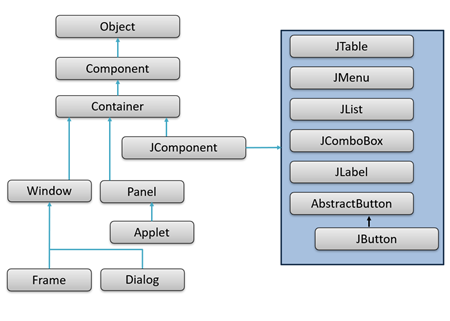

1. Introducción general a la entrada y salida de información
En programación, la E/S (entrada/salida) describe cómo un programa se comunica con el exterior: teclado, pantalla, archivos, periféricos o interfaces gráficas. La entrada permite recibir datos del usuario u otras fuentes, mientras que la salida muestra resultados, mensajes o informes.
- Java ofrece mecanismos de E/S desde la consola hasta GUIs y ficheros persistentes.
- Esta unidad recorre E/S por consola, manejo de archivos y E/S en interfaces gráficas con Swing.
- El objetivo es implementar soluciones de E/S efectivas y adaptadas al contexto del programa.
2. Entrada y salida por consola
2.1 Salida de datos con System.out
La salida estándar en Java está representada por System.out, utilizada para mostrar
mensajes en la consola.
Los métodos más habituales son print(), println() y printf().
print(): imprime sin salto de línea final.println(): imprime y añade un salto de línea.printf(): permite imprimir texto con formato.
System.out.print("Bienvenido ");
System.out.println("al programa de ejemplo.");
System.out.println("Esta línea aparece debajo.");2.2 Entrada con BufferedReader y conversión de tipos
Java no dispone de una función única para leer del teclado; en su lugar utiliza clases como
BufferedReader, que permite leer texto de forma eficiente desde System.in,
devolviendo
siempre cadenas (String) que suelen necesitar conversión a tipos numéricos.
BufferedReaderse combina conInputStreamReaderpara leer líneas.- Los datos leídos se convierten con métodos como
Integer.parseInt()oDouble.parseDouble(). - Es importante capturar errores de formato con
try-catchpara evitar excepciones.
BufferedReader br = new BufferedReader(new InputStreamReader(System.in));
System.out.print("Introduce tu edad: ");
try {
int edad = Integer.parseInt(br.readLine());
System.out.println("Tienes " + edad + " años.");
} catch (NumberFormatException e) {
System.out.println("Error: no has introducido un número válido.");
}2.3 Función de lectura con validación
Un patrón didáctico habitual consiste en encapsular la lectura y validación en una función que repita la petición hasta obtener un valor correcto. Esto refuerza la robustez de la entrada y mejora la experiencia de usuario.
- Se utiliza un bucle con un flag de validez (
boolean valido). - Se controla la excepción
NumberFormatExceptionpara entradas no numéricas. - Se aplican condiciones adicionales (por ejemplo, valores positivos).
public static int pedirEntero() throws IOException {
BufferedReader br = new BufferedReader(new InputStreamReader(System.in));
int numero = -1;
boolean valido = false;
while (!valido) {
try {
System.out.print("Introduce un número entero positivo: ");
numero = Integer.parseInt(br.readLine());
if (numero >= 0) {
valido = true;
} else {
System.out.println("Debe ser un número positivo.");
}
} catch (NumberFormatException e) {
System.out.println("Entrada no válida. Intenta de nuevo.");
}
}
return numero;
}3. Formatos de salida personalizados
3.1 Concatenación de texto
La forma más sencilla de personalizar la salida es concatenar texto con el operador
+. Es intuitivo, pero puede volverse poco legible en salidas complejas o con muchos datos.
- Adecuado para mensajes simples o pruebas rápidas.
- No ofrece control fino sobre alineación o formato numérico.
- Se recomienda evolucionar hacia
printf()en salidas más elaboradas.
String nombre = "Laura";
int edad = 24;
System.out.println("Hola, " + nombre + ". Tienes " + edad + " años.");3.2 Uso de printf y especificadores de formato
Para salidas más controladas, System.out.printf() permite definir el formato de cada valor
mediante especificadores similares a los del lenguaje C, controlando decimales, anchura y alineación.
%d: entero decimal.%f: número con decimales (%.2flimita a 2 decimales).%s: cadena de texto;%n: salto de línea independiente del sistema.
double pi = 3.14159265;
System.out.printf("Valor de PI: %.2f%n", pi);
System.out.printf("%-10s %5s%n", "Nombre", "Edad");
System.out.printf("%-10s %5d%n", "Carlos", 30);
System.out.printf("%-10s %5d%n", "Marta", 25);3.3 Formateo avanzado con String.format()
Cuando se necesita generar texto formateado sin imprimirlo inmediatamente, se puede utilizar
String.format(). Permite reutilizar el mensaje en múltiples contextos: logs, GUIs o
archivos.
- Devuelve una
Stringya formateada. - Es útil para almacenar mensajes y mostrarlos posteriormente.
- Comparte la misma sintaxis de formato que
printf().
double total = 24.5;
String mensaje = String.format("El precio final es %.2f euros", total);
System.out.println(mensaje);4. Librerías estándar para E/S
4.1 Paquetes java.io y java.util
Java ofrece librerías estándar que proporcionan clases y herramientas para gestionar la entrada/salida, procesar datos y organizar la información leída desde consola, archivos u otras fuentes.
java.io: flujos de datos, archivos de texto y binarios, buffers, consola.java.util: colecciones, fechas, formateadores y clases comoScanner.- El uso combinado de ambos paquetes permite construir soluciones de E/S robustas y eficientes.
import java.io.BufferedReader;
import java.io.InputStreamReader;
BufferedReader br = new BufferedReader(
new InputStreamReader(System.in));4.2 Importación de clases y comparativa Scanner vs BufferedReader
Para usar estas clases hay que importarlas al inicio del archivo Java. Además, es
importante
elegir la herramienta de lectura adecuada según el contexto: simplicidad (Scanner) o
rendimiento
y control (BufferedReader).
- Importación individual:
import java.io.BufferedReader; - Importación por paquete:
import java.io.*; - Scanner: muy fácil de usar, conversión automática, rendimiento menor.
- BufferedReader: más eficiente, requiere
parsemanual y manejo deIOException.
import java.util.Scanner;
Scanner sc = new Scanner(System.in);
System.out.print("Introduce tu nombre: ");
String nombre = sc.nextLine();5. Manipulación de archivos
5.1 Lectura secuencial de archivos de texto
La persistencia de datos se logra guardando información en archivos. Para leer ficheros
de texto
en Java es habitual combinar FileReader y BufferedReader y procesar el
contenido
línea a línea.
readLine()devuelvenullal llegar al final del archivo.- Es imprescindible cerrar el fichero con
close()tras su uso. - La lectura secuencial es eficiente y adecuada para archivos grandes.
import java.io.*;
public class LectorArchivo {
public static void main(String[] args) {
try {
BufferedReader br = new BufferedReader(new FileReader("alumnos.txt"));
String linea;
while ((linea = br.readLine()) != null) {
System.out.println("Línea: " + linea);
}
br.close();
} catch (IOException e) {
System.out.println("Error al leer el archivo: " + e.getMessage());
}
}
}5.2 Escritura y modificación de archivos de texto
Para escribir en archivos se usan FileWriter junto con BufferedWriter o
PrintWriter. Java no modifica líneas “in situ”; la estrategia habitual es leer, modificar
en
memoria y reescribir el archivo, o bien abrir en modo append para añadir contenido al final.
BufferedWriter.newLine()añade saltos de línea.- El modo
appendpermite añadir información sin borrar el contenido previo. - Útil para registros, logs o historiales de ejecución.
// Escritura básica
BufferedWriter bw = new BufferedWriter(new FileWriter("salida.txt"));
bw.write("Primera línea.");
bw.newLine();
bw.write("Segunda línea.");
bw.close();
// Añadir al final (append)
BufferedWriter bw2 = new BufferedWriter(new FileWriter("registro.txt", true));
bw2.write("Nueva entrada");
bw2.newLine();
bw2.close();5.4 Acceso y gestión de ficheros con File
La clase File permite gestionar archivos y directorios: comprobar si existen, obtener su
ruta,
tamaño, permisos o eliminarlos. Es fundamental para una administración avanzada de recursos de
almacenamiento.
exists(),delete(),length(),getAbsolutePath(),renameTo()son métodos clave.- Permite construir utilidades para mantenimiento de datos y limpieza de archivos temporales.
- Se integra con las clases de lectura/escritura para flujos completos de E/S.
File archivo = new File("datos.txt");
// Comprobar existencia
if (archivo.exists()) {
System.out.println("El archivo existe: " +
archivo.getAbsolutePath());
} else {
System.out.println("El archivo no se encuentra.");
}6. Introducción a interfaces gráficas con Swing
6.1 ¿Qué es Swing?
Swing es una biblioteca de Java (javax.swing) que permite crear
interfaces gráficas de usuario (GUI) basadas en ventanas, botones, campos de texto,
menús y otros componentes. Se apoya en java.awt y es independiente del sistema operativo.
- Permite crear formularios, cuadros de diálogo, menús y paneles.
- Maneja datos en tablas, listas y áreas de texto.
- Captura eventos generados por el usuario (clics, escritura, selección, etc.).

6.2 Estructura de una GUI básica
Toda interfaz gráfica en Java parte de una ventana principal (JFrame)
sobre la que
se añaden componentes (etiquetas, botones, campos de texto, paneles...). Entender este esqueleto es
esencial para
estructurar GUIs más complejas.
JFrame: contenedor principal.setSize(),setDefaultCloseOperation(),setVisible(true)como métodos básicos.- Uso de
JPanelpara agrupar componentes.
import javax.swing.*;
public class MiVentana {
public static void main(String[] args) {
JFrame frame = new JFrame("Mi primera ventana"); // Crear ventana
frame.setSize(400, 200); // Establecer tamaño
frame.setDefaultCloseOperation(JFrame.EXIT_ON_CLOSE); // Cerrar al salir
frame.setVisible(true); // Hacer visible
}
}6.3 Componentes fundamentales y LayoutManagers
Swing ofrece numerosos componentes reutilizables (JLabel, JButton,
JTextField,
JTextArea, JCheckBox, JComboBox, etc.) y gestores de disposición
(LayoutManagers) para organizar la interfaz de forma limpia y profesional.
- Componentes: etiquetas, botones, campos de texto, áreas de texto, paneles, listas, combos.
- LayoutManagers:
FlowLayout,BorderLayout,GridLayout,BoxLayout. - El diseño de la GUI se basa en combinar componentes y layouts según la estructura deseada.
import javax.swing.*;
import java.awt.*;
public class FormularioSimple {
public static void main(String[] args) {
JFrame frame = new JFrame("Formulario");
frame.setSize(300, 150);
frame.setDefaultCloseOperation(JFrame.EXIT_ON_CLOSE);
JPanel panel = new JPanel(); // Panel para organizar componentes
panel.setLayout(new GridLayout(2, 2)); // Layout de 2 filas y 2 columnas
JLabel etiqueta = new JLabel("Nombre:"); // Etiqueta para el campo de texto
JTextField campoTexto = new JTextField(10); // Campo de texto para entrada de nombre
JButton boton = new JButton("Enviar"); // Botón para enviar el formulario
panel.add(etiqueta); // Añadir etiqueta al panel
panel.add(campoTexto); // Añadir campo de texto al panel
panel.add(boton); // Añadir botón al panel
frame.add(panel); // Añadir panel a la ventana
frame.setVisible(true); // Hacer visible la ventana
}
}7. Controladores de eventos
7.1 El modelo de eventos en Swing
En una GUI, las acciones del usuario (clics, escritura, selección) generan eventos. Java utiliza un modelo de programación dirigida por eventos, donde el código permanece a la espera hasta que el usuario realiza una acción.
- Origen del evento: componente que genera el evento (por ejemplo, un
JButton). - Evento: objeto que representa la acción (
ActionEvent, etc.). - Escuchador (Listener): objeto que contiene el código a ejecutar
(
ActionListener). - La interfaz
ActionListeneres la más común para capturar eventos de tipo “acción realizada”.
7.2 Implementación de ActionListener
ActionListener se utiliza para responder a clics de botones, acciones de menús y algunos
campos
de texto. Se asocia al componente con addActionListener() y se implementa el método
actionPerformed() con la lógica deseada.
- El botón “escucha” el evento y dispara el código cuando el usuario hace clic.
- Es posible usar clases anónimas, internas o externas para organizar el código.
- Puede mostrar mensajes, actualizar componentes o cambiar de ventana.
import javax.swing.*;
import java.awt.event.*;
public class EventoBasico {
public static void main(String[] args) {
JFrame frame = new JFrame("Evento Básico");
frame.setSize(300, 150);
frame.setDefaultCloseOperation(JFrame.EXIT_ON_CLOSE);
JButton boton = new JButton("Haz clic");
boton.addActionListener(new ActionListener() {
public void actionPerformed(ActionEvent e) {
JOptionPane.showMessageDialog(frame, "¡Has hecho clic en el botón!");
}
});
frame.add(boton);
frame.setVisible(true);
}
}
7.3 Actualización de la interfaz mediante eventos
Los eventos no solo muestran mensajes: también permiten modificar dinámicamente la interfaz, cambiando textos, colores, visibilidad de componentes o contenido de campos según las acciones del usuario.
- Lectura de texto con
getText()desde unJTextField. - Modificación de etiquetas con
setText(). - Gestión de errores mediante mensajes contextuales (
JOptionPaneoJLabelde error).
JTextField campo = new JTextField(10);
JLabel resultado = new JLabel();
JButton boton = new JButton("Calcular");
boton.addActionListener(new ActionListener() {
public void actionPerformed(ActionEvent e) {
try {
int numero = Integer.parseInt(campo.getText());
resultado.setText("Número al cuadrado: " + (numero * numero));
} catch (NumberFormatException ex) {
resultado.setText("Error: introduce un número válido.");
}
}
});
8. Entrada y salida a través de interfaces gráficas
8.1 Lectura de campos de texto
En las interfaces gráficas, la entrada de datos se realiza mediante componentes visuales
(JTextField, JTextArea, etc.). El contenido introducido se recupera con
getText(), habitualmente dentro del manejador de eventos de un botón.
- El valor devuelto es siempre de tipo
String. - Si se espera un número, hay que convertir el texto (
Integer.parseInt(),Double.parseDouble()). - La conversión debe ir acompañada de control de errores (
try-catch).
JTextField entrada = new JTextField(10);
JButton boton = new JButton("Procesar");
boton.addActionListener(new ActionListener() {
public void actionPerformed(ActionEvent e) {
try {
int valor = Integer.parseInt(entrada.getText());
// Procesar el valor...
} catch (NumberFormatException ex) {
JOptionPane.showMessageDialog(null, "Introduce un número válido.");
}
}
});
8.2 Presentación de resultados y validación
La salida en GUIs se muestra mediante etiquetas (JLabel), áreas de texto
(JTextArea)
o cuadros de diálogo (JOptionPane). Además, una GUI profesional valida las entradas y
notifica los
errores de forma clara al usuario.
JLabel.setText()yJTextArea.setText()para mostrar resultados.JOptionPane.showMessageDialog()para mensajes emergentes.- Validaciones típicas: campos vacíos, formatos numéricos, rangos y restricciones de contenido.
if (campo.getText().trim().isEmpty()) {
JOptionPane.showMessageDialog(null, "El campo no puede estar vacío.");
} else {
double valor;
try {
valor = Double.parseDouble(campo.getText());
resultado.setText("Valor: " + valor);
} catch (NumberFormatException e) {
JOptionPane.showMessageDialog(null, "Introduce un número válido.");
}
}Actividades de evaluación (resumen)
- Actividad 1: crear la interfaz de login (JFrame con campos de usuario y contraseña, etiquetas y botón).
- Actividad 2: programar el evento del botón para validar usuario/contraseña y
mostrar mensajes con
JOptionPane. - Actividad 3: crear una ventana de bienvenida con mensaje personalizado y botón para cerrar.
- Actividad 4: integrar todo el flujo: cierre de login, apertura de bienvenida y finalización correcta de la aplicación.